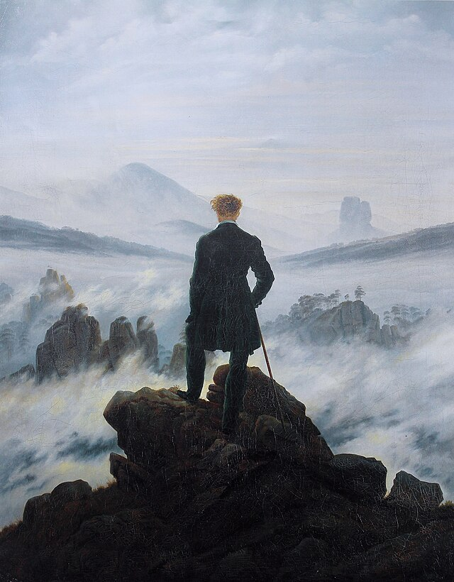

Life is a Journey
We are fallen beings, and our destination is to Go to Heaven by Following the Truth
According to the Catechism of the Catholic Church, the Truth is found in Christ. He is "Full of grace and truth, he came as the "light of the world," he is the Truth. "Whoever believes in me may not remain in darkness." The disciple of Jesus continues in his word to know "the truth [that] will make you free," and that sanctifies."(CCC 2466).
It is essential we dont stray away from the Truth or we fall from Darkeness. Because we are fallen beings, temptation creeps around the corner waiting for us to fall. In life, we have distractions, making us unable to move forward and see the light. With the help of the Holy Spirit, we can move forward. With the help of others in the faith, we can move forward.
My Odyssey by Calvin
I open my eyes
and the birds are singing in harmony.
As I drift through the lakes of clouds,
I meet the little siren
who offers me an apple.
I must refuse and go forth !!
Poseidon looks at me gaily
but his brothers do not.
Zephyrus blows me toward home
So I tune a gift for him as an homage
I finally came and greeted my home
And I thank those who have helped me find the path of my odyssey.